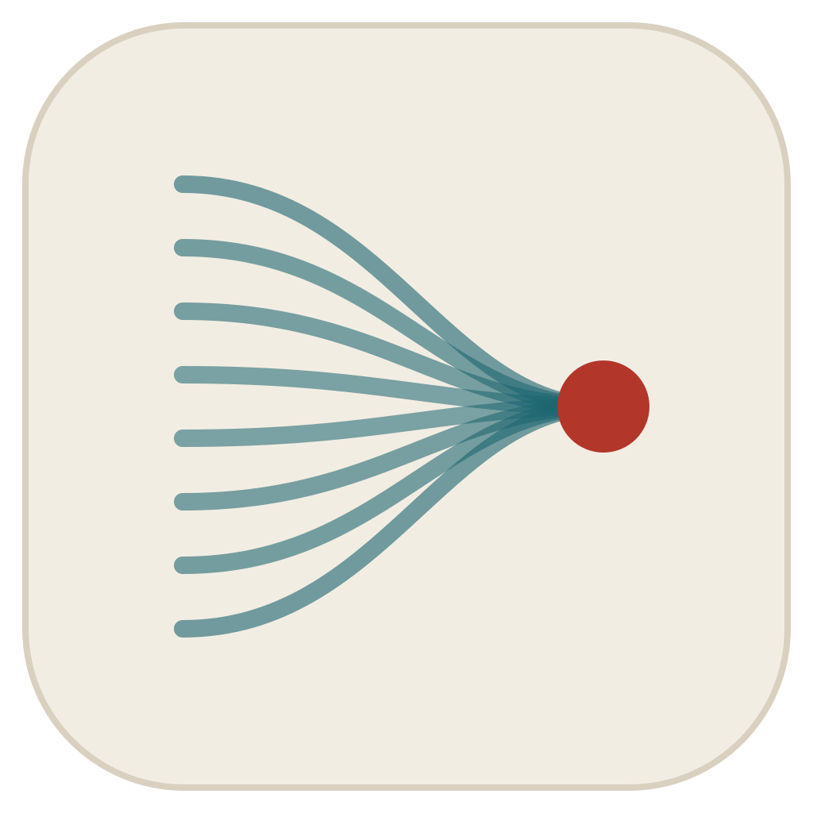

Maestruc
O Maestruc é o regente da família RASGO. Ele abre os instrumentos instalados no computador e os faz tocar juntos, como uma orquestra: o som de cada um chega numa faixa própria, é mixado, pode influenciar os outros e é gravado pista a pista. Cada instrumento continua no seu processo e interpreta o que o Maestruc pede: influência não é controle.

Como funciona
Abrir
Cada instrumento RASGO instalado aparece num cartão. ABRIR o põe para tocar já ligado ao Maestruc; o que não está instalado leva à página oficial dele.
Mixar
O som de cada um chega numa faixa: nível, mudo, solo e destino. Master e fones, cada um no seu aparelho; o Master tem limitador de pico real.
Influenciar
Uma faixa muda outra no som, escutando a energia, os ataques, a densidade ou o silêncio. Quando o Batruc toca, o Aquorbium abre espaço.
Reger
Seed e peça para cada instrumento, ao abrir ou com ele tocando; tocar e parar para todos; tempo.
Gravar
Cada faixa e o Master em WAV 24 bits, uma pasta por take, com o registro do que aconteceu e a versão de entrega para streaming (−14 LUFS, até −1 dBTP).
Os instrumentos
Batruc, Aquorbium, Rasgo Modular, Navalha 2, Rasgo Synth Asterismus, Antitotem, Trioio e Rasgo Synth Studio. Cada um se instala pelo próprio site; o Maestruc não baixa nem instala nada.
- Influência não é controle: cada instrumento interpreta o pedido do seu jeito, e continua tocando sozinho se o Maestruc fechar.
- Sem placa de som virtual: o som chega por uma ponte de memória compartilhada, no Windows, no macOS e no Linux (no Linux também pelo PipeWire).
- Uma vez por dia, se você permitir, ele confere se há versão nova de cada instrumento, e só avisa.
Ainda não: pedir a um instrumento que mude a própria música (“na música”). Por enquanto a influência acontece no som, dentro do Maestruc.
Para quem faz instrumentos
O canal de controle é o protocolo maestruc.link/1: OSC só na máquina, senha da sessão e só as capacidades que cada instrumento declara. O receptor e a ponte de som são dois cabeçalhos que o instrumento copia; sem --maestruc, ele continua autônomo e não abre nenhuma porta.
Créditos
Lúcio de Araújo — concepção, interface e código. Navalha 2 — Glerm Soares e Lúcio de Araújo. Feito com JUCE 9.0.3 (AGPLv3). Licença GNU AGPLv3 ou posterior.
Estado
A versão 0.1.0 está em preparação. O Maestruc foi compilado, testado e tocado no Linux; os pacotes de Windows e macOS são feitos e testados pela integração contínua e ainda não foram abertos em máquinas reais.